경북여상 원서접수현황 이용안내
2027학년도 신입생 모집 · 중학교 홍보 선생님용
※ 이 안내서의 화면은 연습용 가짜 자료로 만든 예시입니다. 실제 학생 정보가 아닙니다.
1접속하고 로그인하기
컴퓨터·휴대폰 어디서든 인터넷 주소 하나로 들어갑니다. 설치는 필요 없습니다.
- 인터넷 주소창에 https://knuekim91.github.io/gbgc_promo/ 를 입력합니다. (즐겨찾기에 추가해 두면 편합니다.)
- 이름에 본인 이름을 직접 입력합니다. 목록에서 고르는 방식이 아닙니다.
- 접속코드(숫자 6자리)를 입력하고 Enter 또는 확인을 누릅니다.
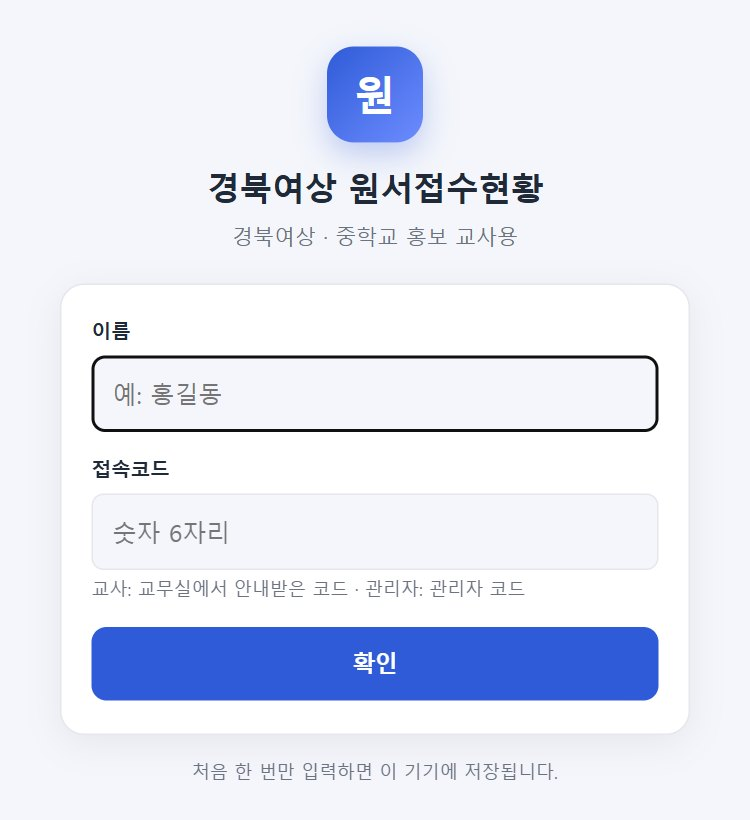
2화면 구성
위쪽에 메뉴가 있고, 메뉴를 누르면 아래 내용이 바뀝니다.
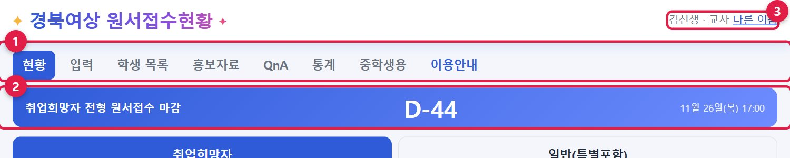
| 메뉴 | 하는 일 |
|---|---|
| 현황 | 전형·계열별 지원 인원과 학생 순위를 한눈에 봅니다. |
| 입력 | 중학교 현장에서 만난 학생을 등록하고, 내가 입력한 학생을 확인·수정·접수합니다. |
| 학생 목록 (관리자는 전체 관리) | 학생을 전형·계열별로 검색하고 수정합니다. |
| 홍보자료 | 홍보자료 센터에서 홍보책자 등 자료를 골라 학교를 소개합니다. 책자는 발표 모드가 있습니다. |
| QnA | 현장에서 받은 질문을 기록하고 선생님들이 답을 답니다. |
| 통계 | 중학교 소재 구·군별, 내신 성적대별 지원 현황입니다. |
| 중학생용 | 중학생에게 보여 줄 QR코드와 안내 페이지입니다. |
| 이용안내 | 지금 보고 계신 이 안내서입니다. |
맨 위의 파란 띠는 원서접수 마감까지 남은 날(D-day)입니다. 취업희망자 전형 마감(11월 26일 17:00)이 지나면 자동으로 일반전형 마감(12월 3일 17:00)으로 바뀌고, 둘 다 끝나면 종료 안내가 나옵니다. 접수 기간에는 "접수 중"이 함께 표시됩니다.
3현황 보기
전형(취업희망자 / 일반)을 고르고, 계열 카드를 누르면 아래에 그 계열 학생이 표로 나옵니다.
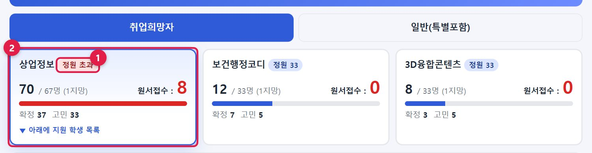
- 카드의 71 / 67명은 지원자 / 정원입니다. (1지망 기준, 타교지원 제외)
- 확정·고민 숫자는 단계별 인원입니다.
학생 표 읽는 법
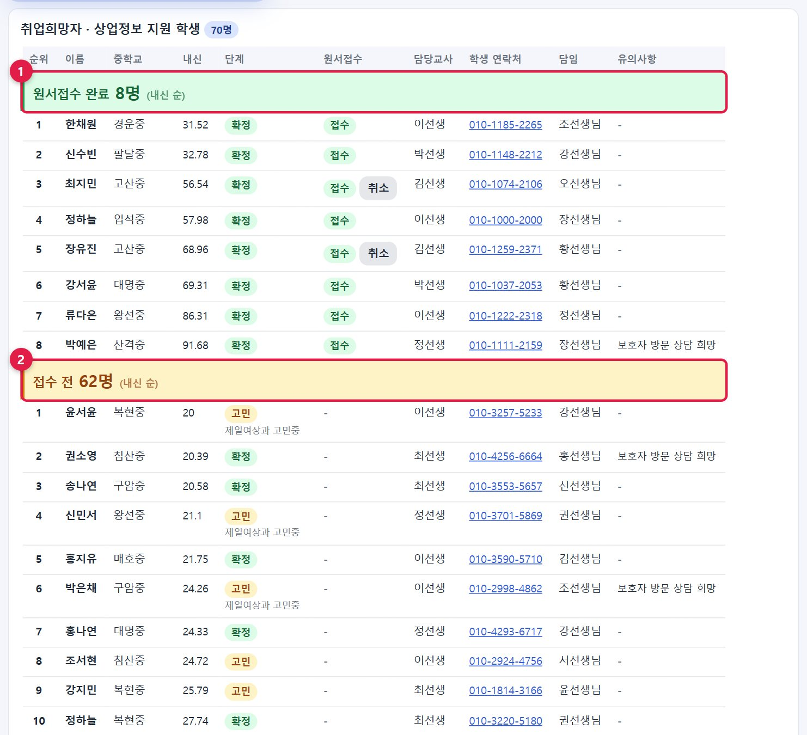
- 표는 원서접수 완료 학생이 맨 위, 그 아래 접수 전 학생입니다. 두 묶음은 따로 1등부터 번호를 매깁니다. (내신 석차백분율이 낮은 학생이 위)
- 고민 태그 아래의 작은 글씨는 선생님이 적은 고민 내용(예: 제일여상과 고민중)입니다.
- 맨 오른쪽 유의사항에는 학생 입력 때 적은 주목할 사항이 보입니다.
분홍색 줄 = 정원 밖
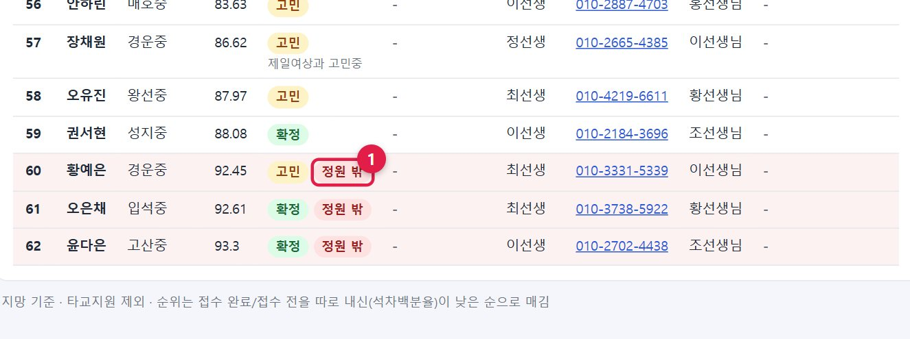
4학생 입력하기
중학교에서 상담한 학생이 있으면 입력 메뉴 아래쪽 학생 입력 칸에 적습니다.
① 단계 고르기
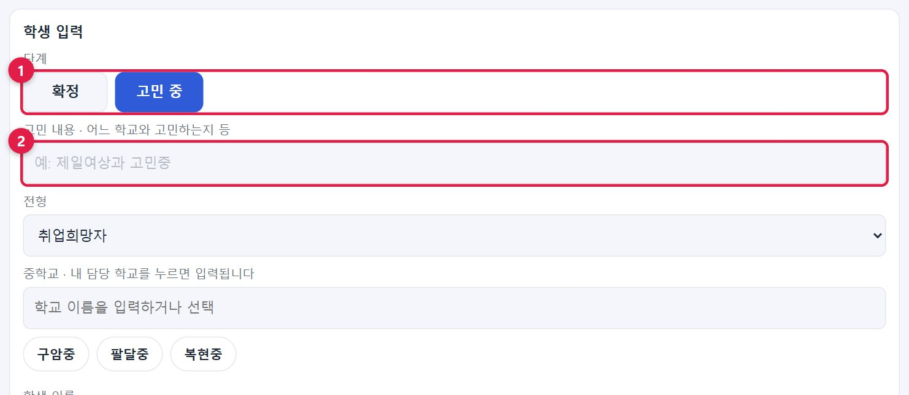
- 확정 우리 학교에 지원하기로 마음을 굳힌 학생
- 고민 중 아직 망설이는 학생. 누르면 고민 내용 칸이 열립니다. 어느 학교와 고민하는지 등을 적으세요. 적지 않으면 빈칸으로 저장됩니다. (흐린 글씨는 예시일 뿐 저장되지 않습니다.)
② 나머지 항목 입력하기
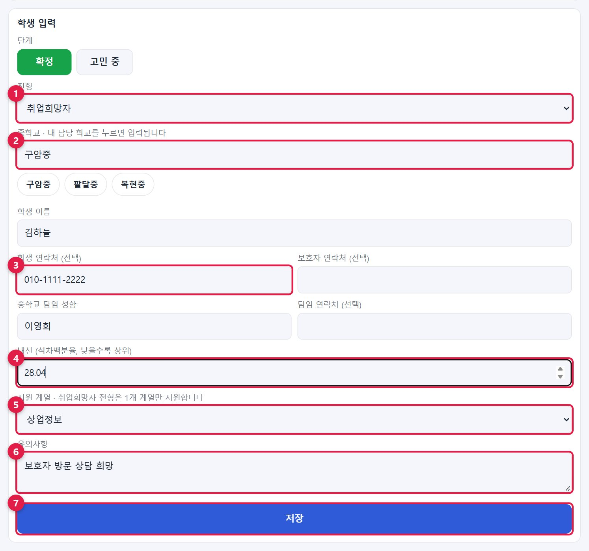
| 항목 | 입력 방법 |
|---|---|
| 전형 | 취업희망자 / 일반(특별포함) 중에서 고릅니다. |
| 중학교 | 학교 이름을 입력하거나 목록에서 고릅니다. 내 담당 학교가 아래 둥근 버튼으로 나오니 누르면 바로 입력됩니다. |
| 학생 이름, 중학교 담임 성함 | 필수 항목입니다. |
| 연락처 (학생·보호자·담임) | 선택 항목입니다. 모르면 비워 두세요. 숫자만 입력해도(예: 01011112222) 칸을 벗어나면 010-1111-2222 형식으로 자동 정리됩니다. |
| 내신 | 석차백분율을 숫자로 입력합니다. 낮을수록 상위입니다. (예: 28.04) 모르면 비워 둘 수 있지만, 비워 두면 순위에 반영되지 않습니다. |
| 지원 계열 | 취업희망자 전형은 1개 계열만 지원하므로 계열 하나만 고릅니다. 일반전형은 1지망·2지망(선택)을 고릅니다. 1지망과 2지망이 같으면 저장되지 않습니다. |
| 유의사항 | 다른 선생님이 알아야 할 주목할 사항을 적습니다. (예: 보호자 방문 상담 희망) 현황 표 맨 오른쪽에 나옵니다. |
③ 저장
- 맨 아래 저장을 한 번만 누릅니다.
- 저장에 2~4초 걸립니다. 그동안 "저장 중입니다" 안내가 나오니 다시 누르지 말고 기다리세요.
- "✓ 저장했습니다"가 나오면 끝입니다. 같은 중학교에서 이어서 입력할 수 있도록 전형·중학교·담임 정보는 남아 있고, 나머지는 비워집니다.
5입력한 학생 확인·수정하기
입력 메뉴 맨 위 내가 입력한 학생에 내가 등록한 학생이 모입니다.
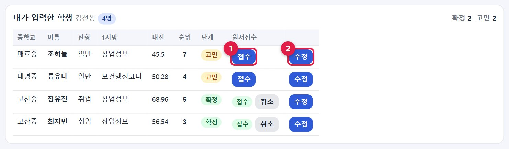
- 고칠 학생 줄의 수정을 누르면 아래 양식에 정보가 채워집니다.
- 내용을 고치고 수정 저장을 누릅니다. 그만두려면 취소입니다.
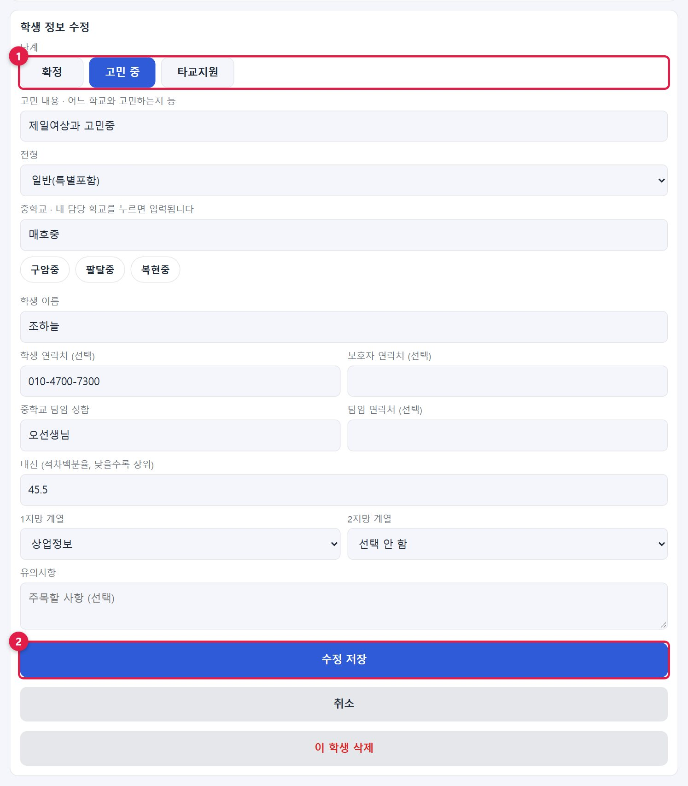
| 단계 | 쓰임 |
|---|---|
| 확정 | 지원하기로 결정 |
| 고민 | 고민 중. 고민 내용을 적을 수 있음 |
| 타교지원 | 다른 학교에 지원하기로 한 학생. 수정할 때만 선택할 수 있고, 순위·인원 숫자에서 빠집니다. 이 학생은 접수 처리도 할 수 없습니다. |
잘못 입력한 학생은 수정 화면 맨 아래 이 학생 삭제로 지울 수 있습니다. 본인이 입력한 학생만 수정·삭제할 수 있습니다. (관리자는 모든 학생)
6원서접수 처리하기
학생이 실제로 원서를 접수했다고 확인되면 접수 버튼으로 기록합니다.
- 현황 표, 내가 입력한 학생, 학생 목록 어디서든 학생 줄에 있는 접수를 누릅니다.
- "○○ 학생의 원서를 접수 처리할까요?" 확인창에서 확인을 누릅니다.
- 학생 줄에 접수 표시가 붙고, 위쪽 원서접수 완료 묶음으로 올라갑니다. 계열 카드의 빨간 숫자도 늘어납니다.
- 잘못 눌렀다면 취소 버튼으로 되돌립니다.
누가 접수 처리를 할 수 있나요?
- 학생을 입력한 담당교사 본인
- 학교에서 정한 접수 도우미: 전화로 접수 소식을 전달받아 대신 눌러 주는 분입니다. 모든 학생을 접수 처리할 수 있습니다.
- 그 외 선생님에게는 접수 버튼이 보이지 않습니다. 담당 학생이 접수했는데 버튼이 안 보이면 접수 도우미에게 전화로 알려 주세요.
- 타교지원 학생은 접수 처리할 수 없습니다.
7학생 목록(전체 관리)
전형 → 계열 순서로 골라서 학생을 모아 보고, 이름·학교로 검색합니다.
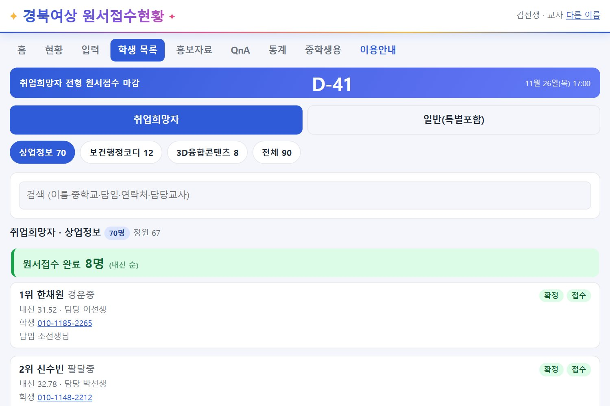
- 취업희망자 / 일반(특별포함)을 먼저 고릅니다.
- 계열 버튼(상업정보·보건행정코디·3D융합콘텐츠·전체)을 고릅니다. 숫자는 그 계열의 학생 수입니다.
- 검색창에 이름·중학교·담임·연락처·담당교사 중 하나를 입력하면 바로 걸러집니다.
- 내가 입력한 학생에는 수정·삭제 버튼이 보입니다.
접수 도우미: 접수를 한꺼번에 처리
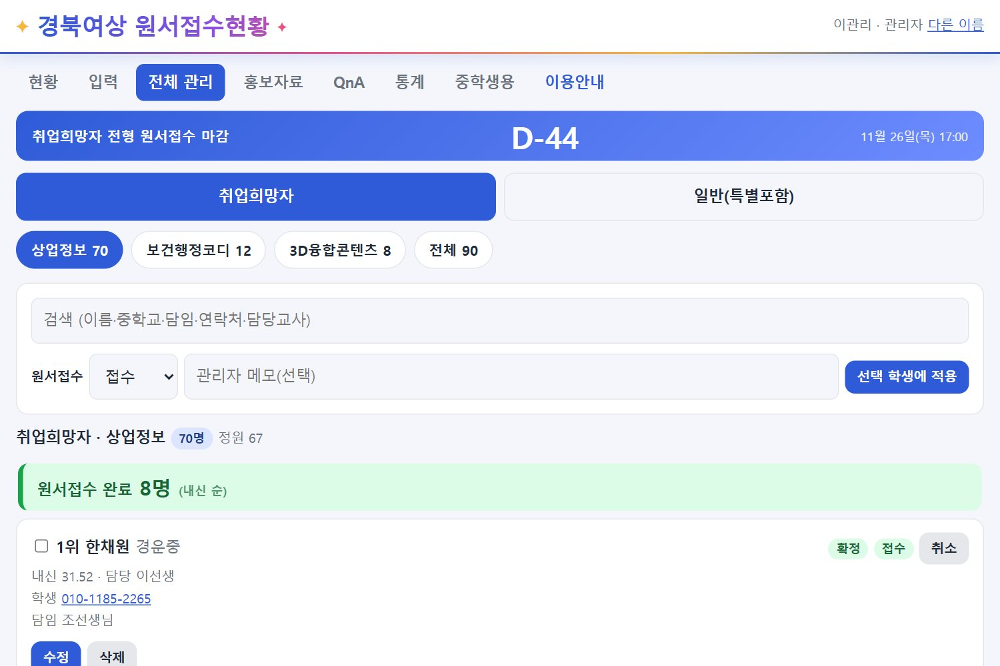
접수 도우미로 지정된 관리자 계정에서는 학생 앞에 체크칸이 생기고, 위쪽에서 원서접수(접수/미접수)와 관리자 메모를 정해 선택 학생에 적용을 누르면 여러 명을 한 번에 처리합니다. (이 기능은 접수 도우미 전용입니다.)
8홍보자료로 현장 홍보하기
중학교를 방문했을 때 홍보 자료를 화면으로 보여 주며 설명할 수 있습니다. 홍보자료 메뉴를 누르면 먼저 홍보자료 센터가 나옵니다.
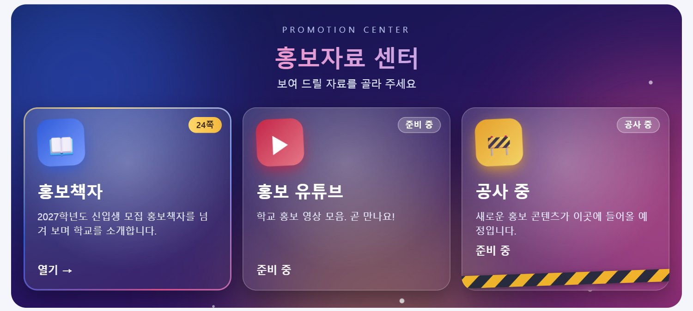
- 홍보책자: 누르면 2027 홍보책자(24쪽)가 열립니다. 아래 설명이 이 화면에 대한 것입니다. 책자 화면 맨 위의 ← 홍보자료 센터를 누르면 센터로 돌아옵니다.
- 홍보 유튜브, 공사 중: 준비 중인 자료입니다. 누르면 카드가 흔들리며 "곧 추가될 예정"이라는 안내가 나옵니다. 새 자료가 생기면 이 센터에 카드가 추가됩니다.
홍보책자 보기
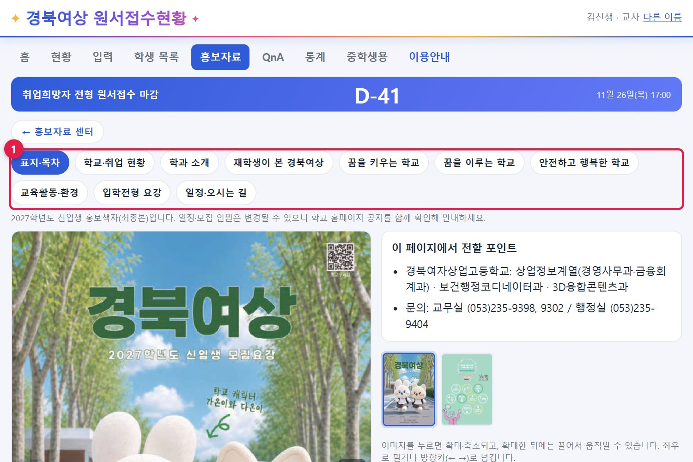
- 위의 항목 버튼을 눌러 원하는 부분으로 바로 이동합니다.
- 오른쪽에는 "이 페이지에서 전할 포인트"가 있어 설명할 말을 참고할 수 있습니다.
- 쪽 넘기기: 화면의 ‹ › 버튼, 키보드 ← →, 휴대폰은 좌우로 밀기.
- 사진을 누르면 확대되고, 확대한 뒤에는 끌어서 움직일 수 있습니다. 다시 누르면 원래대로.
- 발표 모드: 큰 화면(TV·프로젝터)에 연결해 책자만 가득 채워 보여 줍니다. 종료는 Esc 또는 닫기 버튼입니다. 발표 중에는 화면이 꺼지지 않도록 유지됩니다.
9QnA: 현장 질문 남기고 답하기
현장에서 학생·학부모·중학교 선생님께 받은 질문을 남겨 두면, 선생님 누구나 답을 달 수 있습니다. 모아 두면 다음 학교 방문 때 바로 활용할 수 있습니다.
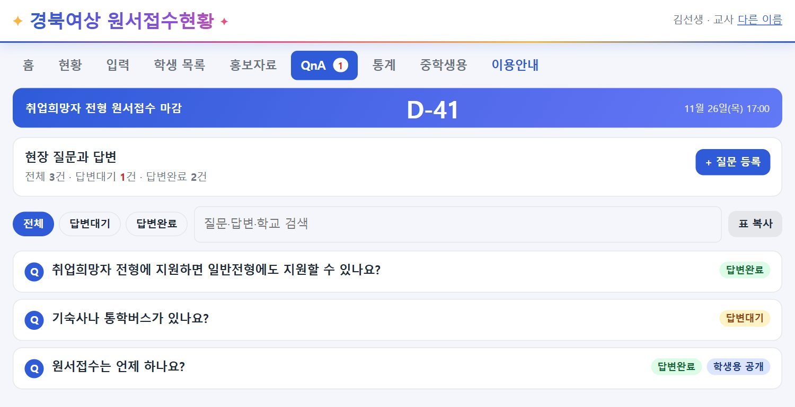
질문 등록
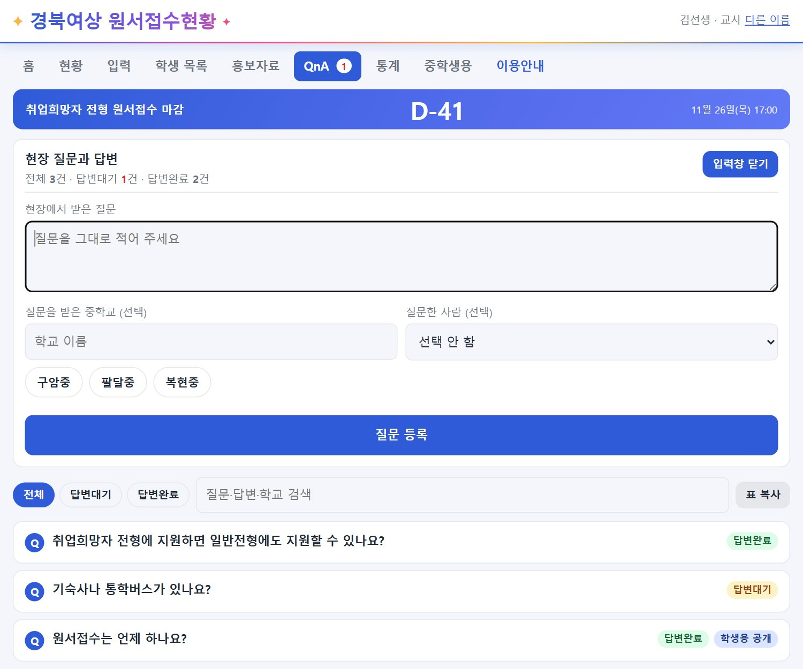
- + 질문 등록을 누르고 받은 질문을 그대로 적습니다. (필수)
- 질문을 받은 중학교와 질문한 사람(학생·학부모 등)은 선택입니다.
- 질문 등록을 누르면 목록에 답변대기로 올라갑니다.
답변 달기
- 질문을 눌러 펼치고 답변 칸에 내용을 적어 등록합니다. 관리자·교사 누구나 가능하고, 여러 명이 답을 이어서 달 수 있습니다.
- 답이 달리면 답변완료가 됩니다. 위쪽 필터로 답변대기만 모아 볼 수 있고, 검색도 됩니다.
- 표 복사를 누르면 전체 질문·답변이 표로 복사되어 엑셀·한글 문서에 붙여 넣을 수 있습니다.
잘못 올린 질문은 작성자 본인 또는 관리자가 삭제할 수 있습니다. 학생용 공개는 관리자가 정합니다. 공개된 질문과 답만 중학생 페이지의 "질문과 답변"에 나타나고, 질문한 학교·사람·등록자는 나가지 않습니다.
10통계
지원 현황을 구·군별, 내신 성적대별로 모아 보는 화면입니다.
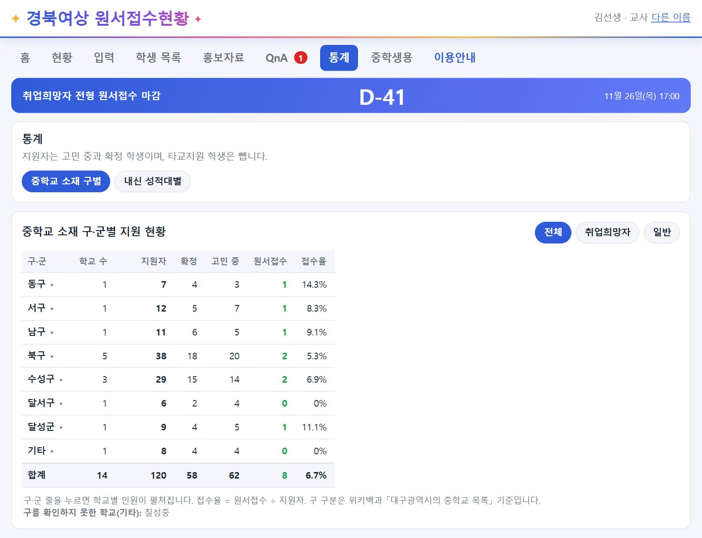
- 중학교 소재 구별: 구·군별 지원자, 확정, 고민 중, 원서접수, 접수율. 구·군 줄을 누르면 학교별 숫자가 펼쳐집니다. 오른쪽 위 버튼으로 전형별로 나누어 볼 수 있습니다.
- 내신 성적대별: 1~50%, 51~70%, 71~80%, 81~90%, 91~100% 구간별 인원을 표와 막대그래프로 봅니다. (내신을 입력하지 않은 학생은 따로 표시됩니다.)
- 모든 통계에서 타교지원 학생은 빠집니다.
11중학생용 페이지와 QR
학생이 직접 휴대폰으로 보는 안내 페이지입니다. 로그인이 필요 없습니다.
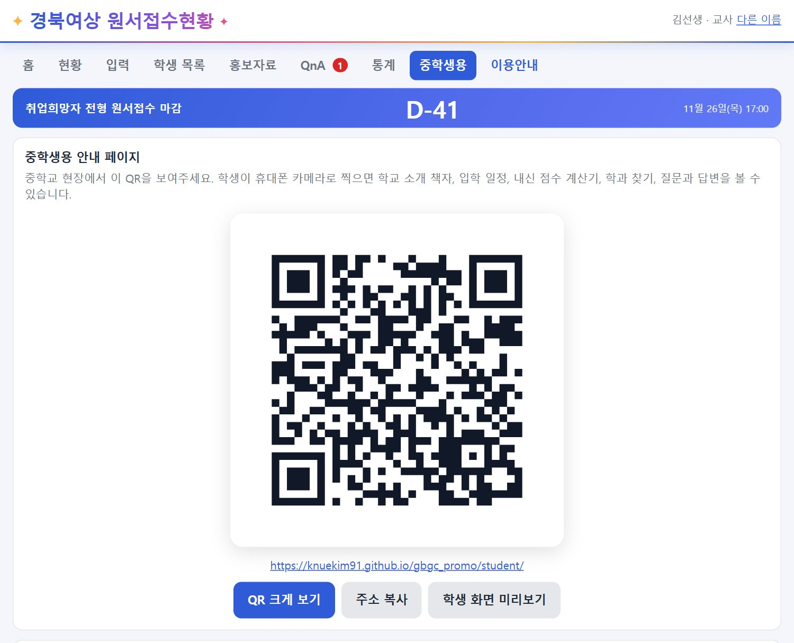
- QR 크게 보기: 교실 TV·프로젝터로 크게 띄웁니다. 주소 복사로 주소를 메신저에 붙여 보낼 수도 있습니다.
- PNG / SVG 내려받기: 포스터·명함·홍보 책자에 넣을 QR 이미지입니다.
- 학생 화면 미리보기로 학생이 보는 화면을 먼저 확인합니다.
학생이 보게 되는 화면
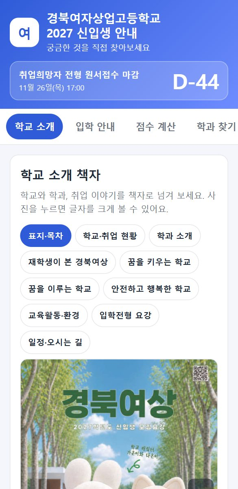
탭은 학교 소개(홍보책자) · 입학 안내(일정·설명회·모집 인원·선발 방법) · 점수 계산(내신 점수 계산기) · 학과 찾기(5문항 퀴즈) · 질문과 답변입니다.
12휴대폰에서 쓰기
휴대폰에서도 같은 주소로 들어가면 화면이 알맞게 바뀝니다. 현장에서 학생을 만나자마자 입력할 수 있습니다.
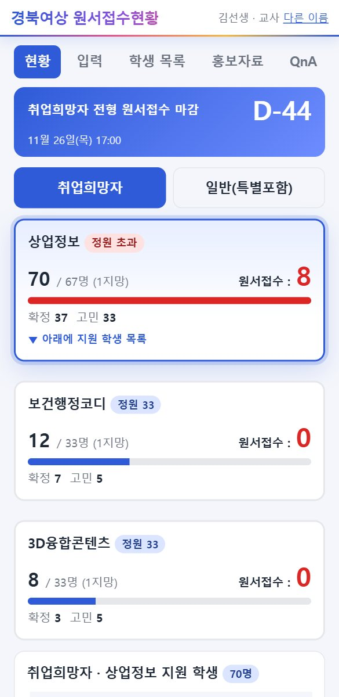
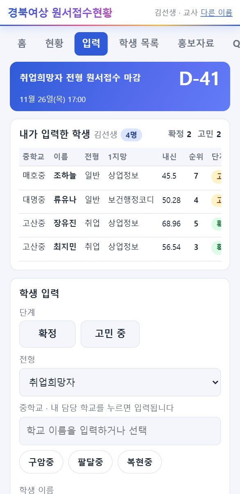
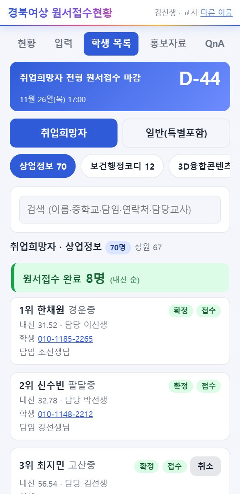
- 메뉴 탭이 화면보다 길면 옆으로 밀어서 나머지 메뉴(QnA·통계·중학생용·이용안내)를 봅니다.
- 표가 넓으면 표를 좌우로 밀어 오른쪽 열을 봅니다. 학생 목록은 카드 형태로 보입니다.
- 연락처를 누르면 바로 전화가 걸립니다.
- 홈 화면에 추가해 두면 앱처럼 바로 열립니다. 안드로이드 크롬: 오른쪽 위 ⋮ → "홈 화면에 추가". 아이폰 사파리: 공유 버튼 → "홈 화면에 추가".
13자주 겪는 일과 주의할 점
| 이럴 때 | 이렇게 하세요 |
|---|---|
| "이름 또는 접속코드가 맞지 않습니다" | 이름의 띄어쓰기·오타를 확인하고 코드를 다시 입력해 보세요. 그래도 안 되면 접수 담당 선생님께 문의하세요. |
| 화면 아래에 "새 버전이 나왔어요"가 뜸 | 지금 새로고침을 누르세요. 기능이 바뀌거나 고쳐졌다는 뜻입니다. |
| 저장했는데 현황에 바로 안 보임 | 저장 후 몇 초 뒤 자동으로 갱신됩니다. 안 되면 새로고침(F5)하세요. |
| 접수 버튼이 안 보임 | 내가 입력한 학생이 아니거나 타교지원 학생입니다. 접수 도우미에게 알려 주세요. |
| 실수로 접수를 눌렀음 | 같은 줄의 취소를 누르세요. |
| 학교 이름이 목록에 없음 | 직접 입력해도 저장됩니다. 학교 이름은 "구암중"처럼 짧은 이름으로 통일해 주세요. |
| 학생의 마음이 바뀜 (확정 → 고민, 타교지원 등) | 해당 학생 수정에서 단계를 바꿉니다. |
| 저장이 오래 걸림 | 2~4초는 정상입니다. 10초 넘게 반응이 없으면 인터넷 연결을 확인하고 새로고침한 뒤 입력 여부를 확인하세요. 중복 입력 경고가 뜨면 이미 저장된 것입니다. |
- 접속코드와 학생 정보는 입학 업무 외의 용도로 쓰지 않습니다.
- 공용 컴퓨터에서는 사용 후 다른 이름으로 로그아웃합니다.
- 화면 캡처를 메신저·SNS에 올리지 않습니다.
- 학생·학부모에게는 이 화면이 아니라 중학생용 QR 페이지를 보여 줍니다.
경북여자상업고등학교 · 2027학년도 신입생 모집 홍보 · 문의: 교무실